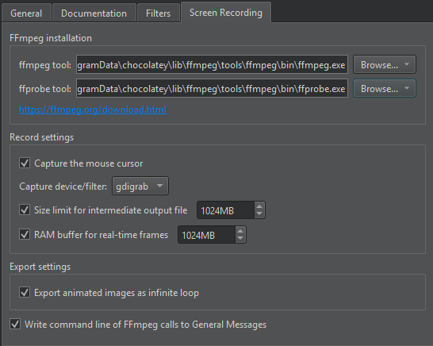

Screen Recording
With FFmpeg, you can record your screens and save the recordings as animated images or videos. You have to download and install FFmpeg and FFprobe to use the screen recorder.
Note: Enable the Screen Recorder plugin to use it.
To set up screen recording:
- Select Preferences > Help > Screen Recording.

- In ffmpeg tool, set the path to the FFmpeg executable.
- In ffprobe tool, set the path to the FFprobe executable.
- Set preferences for recording screens and saving the recordings.
The following table lists the available preferences.
| Setting | Value |
|---|---|
| Capture the mouse cursor | Whether to show the mouse cursor in the recording. |
| Capture device/filter | The grabbing device or filter to use. If the recorder shows error messages, try another grabbing device. |
| Size limit for intermediate output file | To prevent huge files on your hard disk if you forget to stop recording, for example, recording automatically stops when this limit is reached. |
| RAM buffer for real-time frames | The maximum size of a RAM buffer for storing real-time frames. Increase the limit if frames are dropped during the recording. |
| Export animated images as infinite loop | Whether to export animated images as inifite loops. Deselect this check box to only play the animation once. |
| Write command line of FFmpeg calls to General Messages | Shows the options used to run FFmpeg in the General Messages view. |
See also Record screens, Enable and disable plugins, and View output.